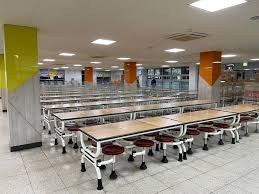
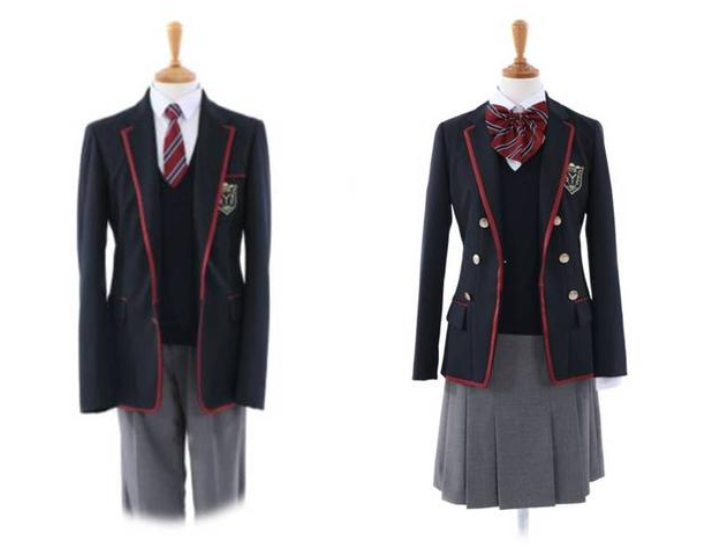

학교 |
직사각형의 모양의 운동장과 그것을 감싸고 있는 ㄱ 자 모양 학교가 있다. | |
급식실 |
 | 급식실은 입구와 출구가 붙어있는 ㄷ 자 모양이다. 요즘 코로나 때매 아크릴판을 설치하고 한칸씩 뛰어서 앉는다. |
교복 |
 | 교복은 예쁘긴하지만 조금 불편하다. 그래서 교복 대신 체육복을 입고다니는 학생들이 대다수이다. |
학교 소개 영상 |
옛날 선배들이 부른 노래이다 잘부른것 같다! |